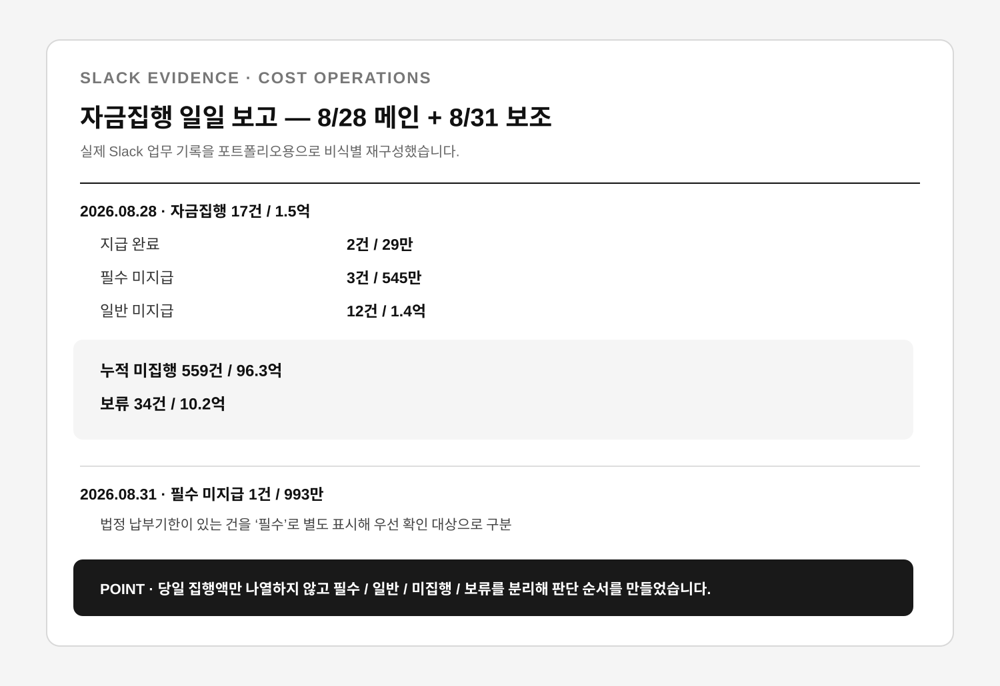
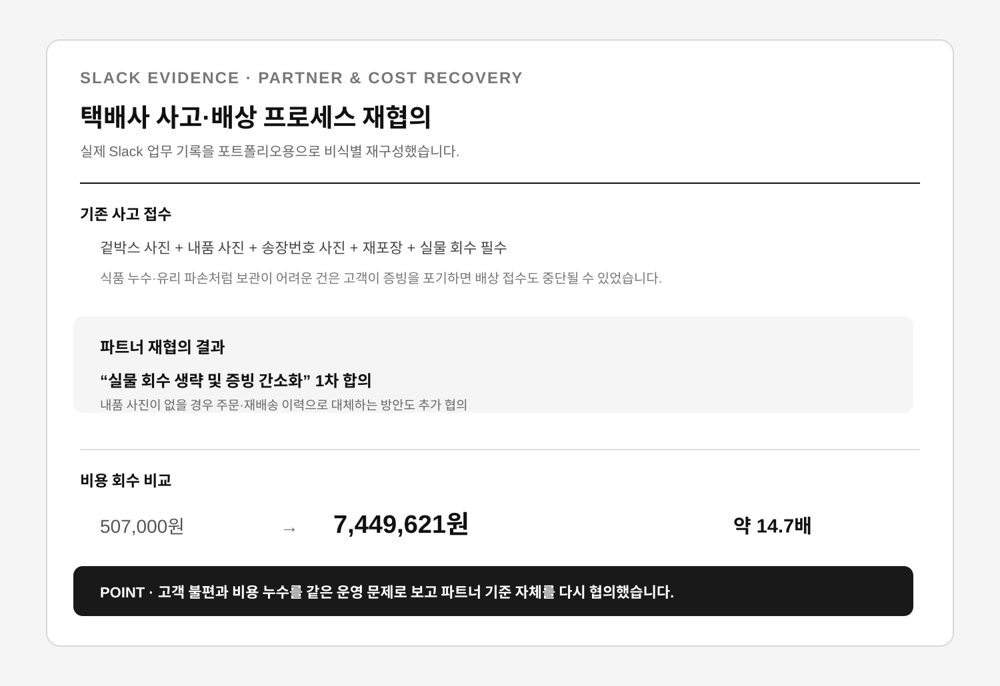

비용 집행은 ‘처리’보다 언제 무엇을 먼저 확인할지 구조화했고, 외부 파트너 사고는 고객 불편과 비용 누수를 함께 줄이는 방향으로 기준을 다시 협의했습니다. 대량 예외가 생기면 처리량이 아니라 고객 영향·기한·재고 리스크로 우선순위를 나누고, 반복 입력은 자동화했습니다.
당일·필수·일반·누적 미집행 건과 금액을 분류해 매일 오전 9시 의사결정용 요약을 만들었습니다.
택배사 사고·배상 기준을 재협의해 증빙·회수 절차를 줄이고 비용 회수 구조를 개선했습니다.
물류 전환기 1,928건을 고객 영향과 기한으로 우선순위화하고 반복 등록을 7→1단계로 줄였습니다.
Sheets·Apps Script·Slack API·Chrome Extension·VBA·생성형 AI와 SQL 기본 조회를 운영에 활용합니다.
주문번호를 키로 출고·상품·고객 필드를 자동 조회하고 중복을 정리.
정형 필드 자동입력과 중복 행 정리로 반복 작업·오입력 축소.
Slack API·Apps Script로 상품 담당자 조회를 명령어 1회로 단축.
SELECT·WHERE·AND 기반 조회·필터로 운영 데이터를 직접 확인.
계약 이후의 운영이 안정적이어야 비용도, 파트너 관계도, 내부 팀의 속도도 지킬 수 있습니다.
저는 그 보이지 않는 운영을 기준과 데이터로 정리해 왔습니다.
당일 예정 건과 과거 미집행 건을 원본 시트에서 직접 찾아야 했고 집행 시점과 중요도가 섞여 있었습니다.
오늘 집행 여부, 필수 여부, 누적 미집행 여부, 금액을 함께 보여줘야 실제 판단에 도움이 된다고 봤습니다.
당일·필수·일반·누적 미집행 건과 금액을 자동 집계해 매일 오전 9시 요약하는 구조를 만들었습니다.
원본을 반복 탐색하지 않고 당일 규모와 먼저 확인할 대상을 한 번에 볼 수 있게 했습니다.

겉박스·운송장·내품 사진, 재포장, 실물 보관·회수까지 요구돼 보관이 어려운 사고는 배상 접수가 중단될 수 있었습니다.
모든 사고에 같은 증빙을 일률적으로 요구하는 구조 자체가 문제라고 보고, 사고 확인에 필요한 최소 증빙과 파트너 책임을 기준으로 논점을 바꿨습니다.
사진과 실물 회수 요건을 줄이는 방안을 파트너 사업팀과 협의했습니다.
‘실물 회수 생략 및 증빙 간소화’ 1차 합의를 이끌었고, 비교 월 배상 회수액은 507,000원에서 7,449,621원으로 확대됐습니다.

물류 전환 직후 재배송 1,151건과 취소 777건이 동시에 발생했습니다.
재배송은 늦을수록 고객 영향이 커져 고객 영향과 마감 시점으로 우선순위를 나눴습니다.
재배송을 우선 처리하고 관리자 정형 입력을 Chrome Extension으로 자동화했습니다.
반복 등록을 7→1단계로 줄이고 지원 인력을 3→2명으로 재산정했습니다.
제휴사마다 취소·위약·운영 조건의 위치와 표현이 달랐습니다.
공통 필드와 확인 순서를 만들고 불명확한 기준은 제휴사에 직접 확인했습니다.
제휴사가 달라도 동일한 구조로 정책을 확인·업데이트할 수 있게 했습니다.